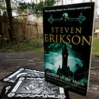
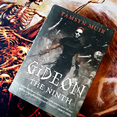

Header
Logo
Banner
The Collection
Welcoming message
Here be a smattering of our series, adventures of all kinds. Find a whole new world to explore!
The Magical Archive lists only the series we have IN FULL. Come in to see what else we’ve begun collecting.
Divider

First Series
The Malazan Book of the Fallen - Steven Erikson
The Malazan Empire is stretched thin. With enemies on all sides, the Empress plots against her own soldiers. Sergeant Whiskeyjack is torn between leading his Bridgeburners to continue their occupation of Darujhistan or seek vengeance against the Empire that betrayed them all. But with rebellions rising in the desert, the bones of the old Empire walking again, old war crimes rearing their heads, and the Gods playing their own games with mortal lives, the petty gripes of a soldier pale in comparison.
Colourful characters fill Canadian Steven Erickson’s dark and brutal world that can never escape the mistakes of its past. This ten book series – with a number of side novels – starts with “The Gardens of the Moon”. Rent it now!
Divider
Second Series
Terry Pratchett's Discworld
“It was all very well going on about pure logic and how the universe was ruled by logic and the harmony of numbers, but the plain fact of the matter was that the Disc was manifestly traversing space on the back of a giant turtle and the gods had a habit of going round to atheists' houses and smashing their windows.”
Our largest collected series, Terry Pratchett's fantasy comedy series brings us to a magical disc-shaped land resting atop a giant sea turtle hurtling through space. The Disc is populated with incompetent wizards, elderly barbarians, overworked soldiers, trolls, dragons, gnomes, state-funded thieves' guilds, and one incredibly angry piece of luggage. Forty-eight different adventures following a wide variety of heroes and villains, and we've got them ALL!
Ask Edward where to start!
Divider
Third Series
The Locked Tomb - Tamsyn Muir
A hilarious romp through piles of bones and a haunted mansion in space. Gideon the Ninth is the first book of a brand new trilogy by Tasmyn Muir featuring more skeletons than any other book in our collection.
Harrowhark Nonagesimus, Reverend Daughter of the Ninth House, has been given an opportunity. If she and her Cavalier can complete a series of puzzles in the First House, she may be invited into the Emperor’s personal guard of necromancers. She’ll be competing against all the other houses and their cavaliers, but they’re the least of her worries. Harrow’s chosen cavalier is her old childhood rival, Gideon Nav. Gideon left her manners at home, and packed only her sunglasses, her sword, and enough porn to last her the whole trip. What could go wrong? FIND OUT.
Divider